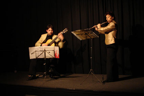
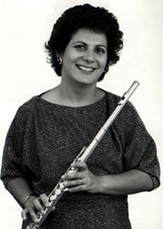

The
Curriculum Vitae of
Daniela 

DANIELA PISANO, flautist, completed her studies at the « Giuseppi Verdi » Conservatory in Milan, where she studied under Marlaena Kessick, then in Vienna with Wolfgang Schulz and in Paris with Patrick Gallois, Jean-Pierre Rampal and J.L.Beaumadier for the piccolo flute.
She was a « Cziffra Foundation »
prize-winner and has won First Prizes in International flute competitions,
including Stresa,
She was principal flute in the European Community orchestra (ECYO) under Claudio Abbado, the « Pomeriggi Musicali » orchestra in Milan, the « orchestra italiana di flauti », and « les solistes de Versailles » orchestra.
Daniela Pisano has given recitals
and performed with chamber music ensembles with success in many countries, such
as
She has also recorded for Rifi, Rusty Classica, Tirreno, for Rai Tv Italy, Italian-Swiss Television, Radio France and Roumanien television.
Since 1985 she has taught at the
« Conservatoire Européen de Musique » in
 